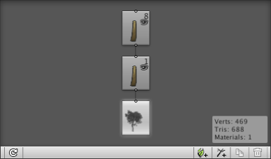
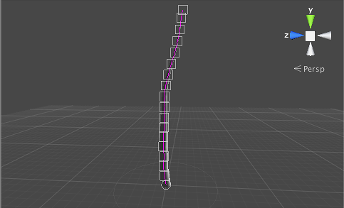

Tree Basics
With the Tree Creator package imported, you can select GameObject > 3D Object > Tree to add a new tree to the scene (this will also create a new Tree asset in the Project view). The tree this produces is initially little more than a single stalk with no leaves or branches. However, you will notice in the inspector that the object has a Tree component attached, and this will allow you to design the tree to your liking.
At the top of the Tree component inspector is the tree structure editor where the basic arrangement of branches and leaves is specified.

It is important to understand the concept of tree levels when working with the editor. The trunk has branches which, in turn, have sub-branches; this branching process continues until the terminal twig are produced. The trunk is regarded as the first level of the tree, and then any branches growing directly from the trunk comprise the second level. Any branches that grow from second level branches together form the third level, and so on.

This notion of levels is reflected in the tree editor. Consider the following tree structure, for example:-

The icons are connected by lines to show the branching levels of the tree. The icon right at the bottom (with the tree picture) denotes the "root" of the tree. When this icon is selected, the properties in the inspector panel below are the ones that apply to the tree as a whole. From this root extend the first and second levels of branching. The icons show several pieces of information:-

The main picture shows which kind of element it is. The number in the top-right corner is the number of branches that exist at that level of the tree, as set by the Frequency property in the inspector. With a given icon selected, changing the Frequency value will change the number of branches at that level. The eye image just below the number denotes the visibility of the branches in the scene view; you click the eye to toggle visibility on or off.
The arrangement of branch groups can be edited using the controls at the bottom-right of the tree editor:-

Going from left to right, the first tool adds leaf groups to the tree. Leaves are arranged in levels as are branches but unlike branches, leaves cannot further subdivide into more levels. The second tool adds a new branch group at the current level (ie, it creates a new "child" for the selected branch icon). The third tool duplicates whichever group is selected while the fourth deletes a group from the tree. It is possible to have several groups at each level of a tree as in the following example:-

This tree has a main trunk from which two different branch groups grow. The first has its own sub-groups of branches and leaves, while the second just has bare branches. The separate groups at a given level can each have their properties set differently in the inspector so you could, say, have a large number of short twigs sprouting from the trunk along with a smaller number of main branches.
Hand Editing Branches and Leaves
When a branch is selected in the tree structure view, it will also be highlighted in the scene view, as with this "tree" (which is just a bare trunk for now).

The tree's single branch is shown with a number of boxes overlaid on the view. The boxes represent control points along the length of the branch (ie, the center line of the branch passes through all the points but is also smoothly curved between them). You can click and drag any of the boxes to move the control points and thus change the shape of the branch.

Moving control points is actually just the first of three options available on the hand editing toolbar.

The second tool allows you to bend the branch by rotating it at a given control point. The third tool allows you to start with the mouse at a given control point and from there on draw the branch freehand. The branching is still controlled from the structure view - only the shapes of branches can be redrawn. If a leaf group is selected in the structure view then a corresponding toolbar gives you options to move or rotate leaves around their parent branch.
Note that some properties in the tree creator's inspector are related to procedural generation of trees (ie, the computer generates the shape itself randomly) and these will be disabled after you have hand edited the tree. There is a button which will restore a tree to procedural status but this will undo any edits you have made by hand.